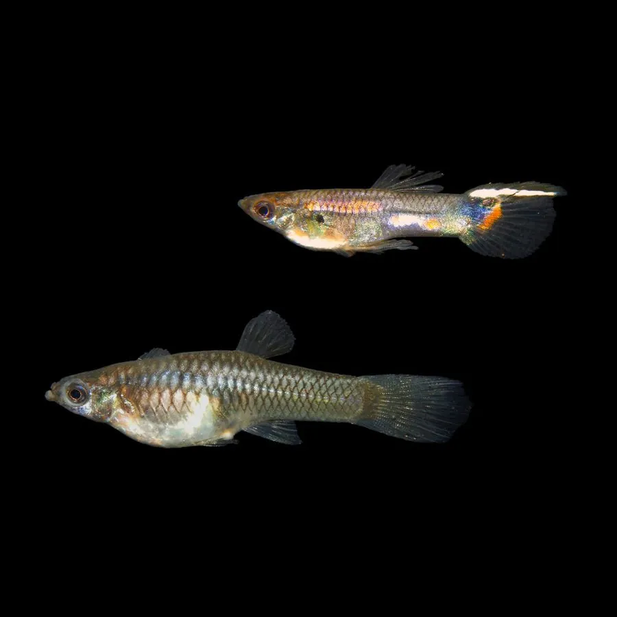

鱼类 · 动物界
孔雀鱼 Poecilia reticulata

原产南美北部的小型观赏鱼，雄鱼尾鳍如孔雀开屏般艳丽，繁殖力极强，是最普及的热带观赏鱼之一。
- 分类
- 门脊索动物门纲硬骨鱼纲目鳉形目科花鳉科属花鳉属
- 栖息环境
- 南美北部及引种地区的小溪、沟渠、池塘和沼泽，喜温暖静水与水草
- 地理分布
- 原产南美洲北部委内瑞拉、圭亚那、巴西等地，全球暖水水域广泛引种和养殖
- 保护级别
- 暂无评估
物种志
孔雀鱼体型小巧，雄鱼体长仅 3–4 cm，雌鱼可达 5–6 cm。雄鱼体色艳丽，尾鳍宽大，布满红、橙、蓝、黑等色斑和花纹，游动时像孔雀开屏；雌鱼体色较素，腹部圆大。雄鱼的臀鳍特化成交接器，用来把精子送入雌鱼体内。经过一百多年的人工选育，孔雀鱼已形成礼服、蛇纹、马赛克等大量品系。
孔雀鱼原产南美洲北部委内瑞拉、圭亚那、巴西等地的小溪、沟渠和沼泽，后被引入全球暖水水域。它是杂食性鱼类，吃浮游生物、藻类、昆虫幼虫和有机碎屑。孔雀鱼的繁殖力极强，为卵胎生：受精卵在雌鱼体内发育，每 3–4 周就可产仔一次，每次数十至百余尾，因此俗称“百万鱼”；雌鱼一次交配后还能储存精子，连续产仔数次。由于繁殖快、适应力强，它在不少热带地区形成野外种群，与本土鱼类竞争。孔雀鱼是水族市场的入门品种，人工繁殖技术十分成熟。目前它没有IUCN 的正式评估，中国也未将其列入国家重点保护野生动物名录。
形态与习性
- 食性杂食性，吃浮游生物、藻类、昆虫幼虫和有机碎屑
- 体长雄鱼 3–4 cm，雌鱼 5–6 cm
- 繁殖卵胎生，每 3–4 周产仔一次，每次数十至百余尾
- 寿命约 1–2 年
- 雌雄差异雄鱼色彩艳丽、尾鳍宽大，雌鱼体色素、腹部圆大
- 水温适宜水温 22–28 ℃
趣味知识
- 孔雀鱼是卵胎生鱼类，受精卵在雌鱼体内发育，直接产出会游泳的幼鱼。
- 雌鱼一次交配后可以把精子储存起来，连续产仔好几次。
- 雄鱼的臀鳍特化成交接器，这是花鳉科鱼类的共同特征。